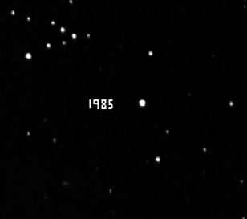

동기 유발
10만 년 전의 북두칠성은 국자 모양이었을까?
교과서 p. 58학습 목표
- 별의 시선 속도와 접선 속도를 이용해 별의 공간 운동을 설명할 수 있다.
- 별자리를 이루는 별들의 오랜 시간에 걸친 위치 변화를 추론할 수 있다.
W.carter, CC BY-SA 4.0

Steve Quirk, 퍼블릭 도메인
'붙박이별(항성)'이라는 이름과 달리 별들도 초속 수십 km로 움직인다.
그런데 왜 우리는 평생 별자리 모양이 변하는 것을 느끼지 못할까?
그런데 왜 우리는 평생 별자리 모양이 변하는 것을 느끼지 못할까?
답의 핵심은 '거리가 매우 멀어 각도 변화가 작다'. 접선 속도 = 4.74 μr 식을 거꾸로 생각하게 하면 좋습니다. 운영안 3차시(공간 운동 1 / 별자리 변화 1 / 데이터 탐구 1). 교과서 탐구(카시오페이아자리)와 달리 데이터 탐구는 북두칠성의 '운동 성단'을 찾는 활동으로 구성했습니다.
핵심 개념 1
별의 공간 운동
교과서 p. 58 ~ 59(1) 고유 운동과 접선 속도
- 고유 운동(μ): 별이 1년 동안 천구 위에서 시선에 수직인 방향으로 움직인 각도(″/년)
- 접선 속도(vt): 별의 실제 속도 중 시선에 수직인 성분. 고유 운동과 거리를 알아야 구할 수 있다.
- 같은 접선 속도라도 멀리 있는 별일수록 고유 운동이 작다.
vt (km/s) = 4.74 μ (″/년) × r (pc) 4.74 = 1 AU/년을 km/s로 바꾼 값 (1.496×10⁸ km ÷ 3.156×10⁷ s)
(2) 시선 속도와 공간 속도
- 시선 속도(vr): 시선 방향 성분. 스펙트럼 흡수선의 도플러 이동으로 구한다. 멀어지면 적색 편이(+), 다가오면 청색 편이(−)
- 공간 속도(v): 접선 속도와 시선 속도를 합한 실제 속도
vr = Δλλ₀ c , v = vt² + vr²
예제 · 바너드별
μ = 10.39″/년, r = 1.83 pc, Hα선(656.28 nm)이 656.04 nm에서 관측됨
vt = 4.74 × 10.39 × 1.83 ≈ 90 km/s, vr = (−0.24/656.28) × 3×10⁵ ≈ −110 km/s(접근)
v = 90² + 110² ≈ 142 km/s
시뮬레이션 1공간 속도 분해기: 접선 속도와 시선 속도
왼쪽: 관측자(아래)와 별의 속도 벡터 분해. 오른쪽 위: 별의 스펙트럼(실선)과 실험실 기준 파장(점선). 오른쪽 아래: 100년 동안의 천구 위 이동. 각도를 90°로 두면 어떤 일이 생길까?
핵심 개념 2
별자리 모양의 변화
교과서 p. 60 ~ 61별자리는 영원하지 않다
- 별자리를 이루는 별들은 서로 거리도 다르고 움직이는 방향과 빠르기도 다르다. 같은 별자리의 별들은 대부분 우연히 같은 방향에 보일 뿐이다.
- 고유 운동이 매우 작아 사람의 일생 동안에는 변화를 느낄 수 없지만, 수만 년이 지나면 별자리 모양이 눈에 띄게 달라진다.
- 미래(과거)의 위치 = 현재 위치 + 고유 운동 × 시간. (단, 시선 속도 때문에 거리가 변하면 고유 운동 자체도 조금씩 변한다.)
- 북두칠성의 가운데 다섯 별은 실제로 함께 움직이는 무리(큰곰자리 운동 성단)이고, 양 끝 두 별은 다른 방향으로 움직인다.
데이터 탐구
히파르코스 고유 운동으로 북두칠성의 과거와 미래 그리기
탐구 개요
히파르코스 위성이 측정한 북두칠성 일곱 별의 위치·고유 운동·시차·시선 속도로 ① 각 별의 공간 속도를 계산하고, ② 별자리 모양이 10만 년 전후로 어떻게 변하는지 그리며, ③ '고유 운동 공간'에서 서로 가까운 별들을 묶어 함께 태어난 별의 무리를 찾는다.
공간 속도 계산표의 고유 운동(mas/년)과 시차(mas)로 접선 속도, 시선 속도와 합쳐 공간 속도를 계산한다.
시간 여행시간 슬라이더로 10만 년 과거 ~ 10만 년 미래의 모습을 본다. 국자 모양은 언제 가장 뚜렷한가?
군집 찾기'고유 운동 공간' 그림에서 점들이 모이는 무리를 찾는다. 같은 무리의 별은 거리(시차)도 비슷한가?
결론함께 움직이는 별들은 어떤 공통 기원을 가졌을까?
데이터 랩북두칠성 시간 여행
하늘 보기는 북쪽이 위, 동쪽이 왼쪽인 실제 하늘 방향이다. 시선 속도로 인한 거리 변화는 무시하고 고유 운동이 일정하다고 가정했다.
📋 데이터 표 μα* = 적경 방향 고유 운동 × cos δ
분석 질문
1. 일곱 별의 공간 속도를 계산해 보자. 고유 운동이 비슷한 별들은 공간 속도도 비슷한가?
메라크·페크다·메그레즈·알리오스·미자르는 고유 운동이 동쪽으로 약 100 ~ 120 mas/년, 시차 약 38 ~ 41 mas(약 25 pc)로 비슷하고, 접선 속도도 약 10 ~ 15 km/s, 시선 속도도 약 −6 ~ −13 km/s로 비슷하다. 두베와 알카이드는 고유 운동 방향이 반대(서쪽)이고 거리도 다르다(약 38 pc, 32 pc).
2. 10만 년 뒤와 10만 년 전의 북두칠성은 어떤 모습인가? 왜 양 끝의 별만 크게 벗어날까?
가운데 다섯 별은 함께 움직여 모양을 거의 유지하지만, 두베(국자 앞 끝)와 알카이드(손잡이 끝)는 반대 방향으로 움직여 국자 모양이 일그러진다. 10만 년 뒤에는 국자 머리 앞쪽이 벌어지고 손잡이가 꺾인 모양이 된다.
3. 고유 운동 공간에서 묶인 다섯 별은 어떤 공통점을 가졌을까? 이런 무리를 무엇이라 하는가?
같은 분자운에서 비슷한 시기(약 4억 년 전)에 태어나 같은 방향·빠르기로 함께 움직이는 별의 무리, 즉 운동 성단(큰곰자리 운동 성단)이다. 하늘에서 위치가 가까운 것만으로는 무리인지 알 수 없고, 속도·거리까지 비슷해야 실제 무리라고 판단할 수 있다(가이아 위성이 이 방법으로 수천 개의 성단과 별 흐름을 찾아냈다).
형성 평가
개념 확인 문제
그림·자료 출처
사진: Wikimedia Commons. 북두칠성 자료는 Hipparcos(새 환원) 카탈로그와 SIMBAD의 고유 운동·시차·시선 속도를 반올림한 값입니다. 시뮬레이션은 직접 만들었습니다.